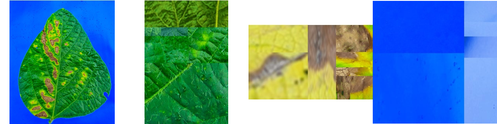
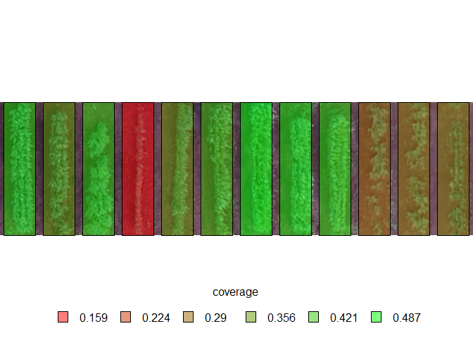

pliman (plant image ananlysis) is designed to analyze plant images, especially related to leaf analysis. You provide color palettes, tell pliman what each one represents, and it takes care of the details. The package will help you to:
- Measure leaf area
- Measure disease severity
- Count the number of lesions
- Count objects in an image
Installation
The development version of pliman can be installed from GitHub with:
devtools::install_github("TiagoOlivoto/pliman")
# To build the HTML vignette use
devtools::install_github("TiagoOlivoto/pliman", build_vignettes = TRUE)Note: If you are a Windows user, you should also first download and install the latest version of Rtools.
Disease severity
library(pliman)
# |===========================================|
# | Tools for Plant Image Analysis (pliman) |
# | Author: Tiago Olivoto |
# |===========================================|
img <- image_import(system.file("tmp_images/sev2.png", package = "pliman"))
healthy <- image_import(system.file("tmp_images/sev_healthy.png", package = "pliman"))
symptoms <- image_import(system.file("tmp_images/sev_sympt.png", package = "pliman"))
background <- image_import(system.file("tmp_images/sev_back.png", package = "pliman"))
image_combine(img, healthy, symptoms, background, ncol = 4)
symptomatic_area(img = img,
img_healthy = healthy,
img_symptoms = symptoms,
img_background = background,
show_image = TRUE)
# healthy symptomatic
# 1 88.38373 11.61627Count crop grains
The function count_objects() can be used to count the grains of an image. In the following example, we will count the number of soybean grains of an image with 150 grains.
img <- image_import(system.file("tmp_images/soy_150.png", package = "pliman"))
image_show(img)
count_objects(img)
#
# --------------------------------------------
# Number of objects: 150
# --------------------------------------------
# statistics area perimeter
# min 389.00000 64.000000
# mean 564.10000 76.480000
# max 774.00000 95.000000
# sd 79.04936 5.929926
# sum 84615.00000 11472.000000In the following example, we will enumerate the grains with an area greater than the mean of all grains in the image and add a white background to the processed image.
count_objects(img,
show_segmentation = FALSE,
col_background = "white",
marker = "text",
lower_size = 564.1,
marker_size = 0.5,
marker_col = "white")
#
# --------------------------------------------
# Number of objects: 74
# --------------------------------------------
# statistics area perimeter
# min 566.00000 75.000000
# mean 631.68919 81.094595
# max 774.00000 95.000000
# sd 43.52072 4.125327
# sum 46745.00000 6001.000000Getting help
If you encounter a clear bug, please file a minimal reproducible example on github
Suggestions and criticisms to improve the quality and usability of the package are welcome!